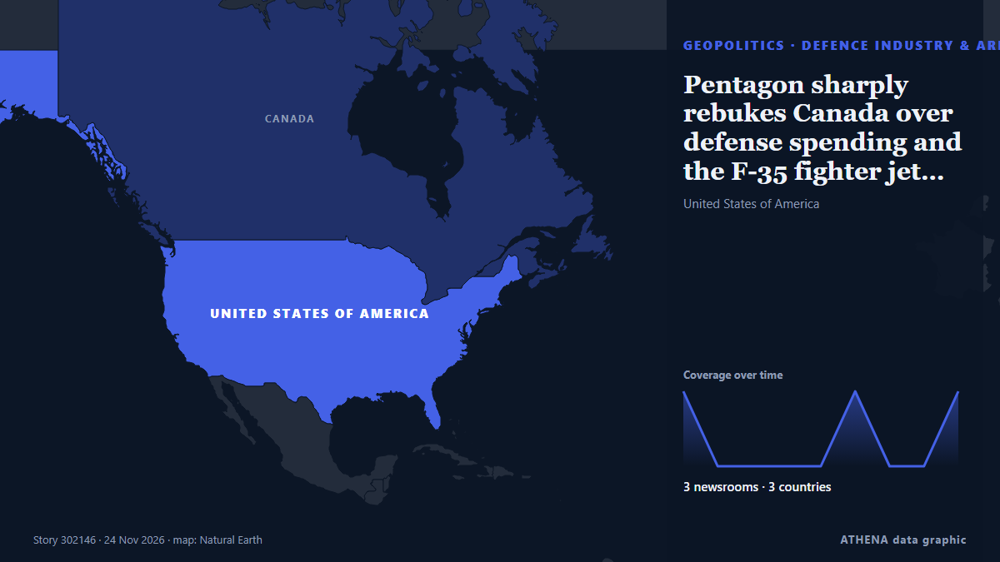

Pentagon sharply rebukes Canada over defense spending and the F-35 fighter jet review

The Pentagon has accused Canada of falling short as a credible partner in defending North America, delivering a sharp rebuke to its longtime ally over military spending and its reconsideration of… από ABC News (International)
Τι άλλαξε 4 νέες αναφορές από 3 μέσα τις τελευταίες 24 ώρες.
Δείτε τις πηγές ›Τεκμήριωση: Περιορισμένη
Αναφέρθηκε ανεξάρτητα από 3 μέσα σε 3 χώρες από τις 20 Μαΐ, πρώτο το CBC News (alternative feed)· η κάλυψη εξασθενεί. Το ATHENA εκτιμά τον κίνδυνο χαμηλό (0.6/10), κυρίως λόγω της τεκμηρίωσης και της σοβαρότητάς του. Βεβαιότητα 64% (μέτρια): το επιβεβαιώνουν 3 ανεξάρτητα μέσα, μέση αξιοπιστία 79%. Μέσα ανά χώρα: Καναδάς (2), Ηνωμένες Πολιτείες (2), Γαλλία (1). Κάλυψη: 20 Μαΐ έως 24 Νοε, 13270 ώρες.
Γιατί έχει σημασία: Οι εξελίξεις στην ασφάλεια και τη διπλωματία μπορούν να μετατοπίσουν συμμαχίες, εμπόριο και αγορές πολύ πέρα από τις χώρες που εμπλέκονται.
Τι άλλαξε: 4 νέες αναφορές από 3 μέσα στο 24ωρο έως 24 Νοε.
Πρώτη διατύπωση: Pentagon takes fresh aim at Canada's military readiness, defence spending priorities
ΑυτοματοποιημένοΕπιλέχθηκε, ομαδοποιήθηκε και βαθμολογήθηκε με τη δημοσιευμένη μέθοδο της ATHENA από 4 ανεξάρτητα μέσα. Ο τίτλος είναι του μέσου· οι προτάσεις της ATHENA ακολουθούν σταθερά πρότυπα - δεν τις γράφει παραγωγική ΤΝ. Πώς λειτουργεί →
Πώς να διαβάσετε αυτή τη σελίδα
- Τι διαβάζετε
- 3 μέσα σε 3 χώρες ανέφεραν αυτό το γεγονός. Οι αναφορές παρακάτω εμφανίζονται με τη σειρά που δημοσιεύτηκαν· κάθε τίτλος ανοίγει το αρχικό άρθρο. Το ATHENA δεν γράφει δικά του ρεπορτάζ.
- Η εκτίμησή μας
- Για την καταγραφή — Οι αναφορές περιγράφουν ένα ολοκληρωμένο, εσωτερικό, εμπορικό ή προσωπικό ζήτημα. Το καταγράφουμε ώστε να βλέπετε ποιος το ανέφερε και πότε. Δεν παρακολουθούμε εδώ κίνδυνο ευρύτερης σύγκρουσης.
- Πόσα στοιχεία υπάρχουν
- Περιορισμένη Αντιμετωπίστε τη σελίδα ως πρώιμη αναφορά.
Αφού αφαιρεθούν οι επαναλήψεις, τα άσχετα και τα παλιά στοιχεία, υπολογίζονται 3 από τις 5 αναφορές που παρατίθενται· το 100% των τίτλων αντιστοιχεί στο γεγονός.
- Τι δεν σημαίνει
- Το ATHENA μετρά πώς καλύπτεται ένα γεγονός, όχι αν είναι αληθές. Δεν είναι πρόβλεψη, κρίση για το ποιος έχει δίκιο ή συμβουλή.
- Τι θα την άλλαζε
- Αναφορές από άλλα ανεξάρτητα μέσα που δείχνουν διαφορετική εξέλιξη, ή σαφής επιβεβαίωση ή διάψευση από επίσημη πηγή.
Εκτίμηση R2 · ανανεώνεται με κάθε ενημέρωση της σελίδας. Το ATHENA δεν έχει δημοσιεύσει ακόμη ιστορικό επιδόσεων για αυτές τις εκτιμήσεις· όταν το κάνει, θα συνδέεται εδώ.
Με μια ματιά
Επιλέγεται, βαθμολογείται και γράφεται από τη δημοσιευμένη μεθοδολογία του ATHENA. Κανένας συντάκτης δεν παρεμβαίνει σε μεμονωμένα γεγονότα. Πώς παράγεται ›
| 20 May 21:18 UTC | 1 |
|---|---|
| 22 May 21:18 UTC | 0 |
| 24 May 21:18 UTC | 0 |
| 26 May 21:18 UTC | 0 |
| 28 May 21:18 UTC | 0 |
| 30 May 21:18 UTC | 0 |
| 01 Jun 21:18 UTC | 0 |
| 03 Jun 21:18 UTC | 0 |
| 05 Jun 21:18 UTC | 0 |
| 07 Jun 21:18 UTC | 0 |
| 09 Jun 21:18 UTC | 0 |
| 11 Jun 21:18 UTC | 0 |
| 13 Jun 21:18 UTC | 0 |
| 15 Jun 21:18 UTC | 0 |
| 17 Jun 21:18 UTC | 0 |
| 19 Jun 21:18 UTC | 0 |
| 21 Jun 21:18 UTC | 0 |
| 23 Jun 21:18 UTC | 0 |
| 25 Jun 21:18 UTC | 0 |
| 27 Jun 21:18 UTC | 0 |
| 29 Jun 21:18 UTC | 0 |
| 01 Jul 21:18 UTC | 0 |
| 03 Jul 21:18 UTC | 0 |
| 05 Jul 21:18 UTC | 0 |
| 07 Jul 21:18 UTC | 0 |
| 09 Jul 21:18 UTC | 0 |
| 11 Jul 21:18 UTC | 0 |
| 13 Jul 21:18 UTC | 0 |
| 15 Jul 21:18 UTC | 0 |
| 17 Jul 21:18 UTC | 0 |
| 19 Jul 21:18 UTC | 0 |
| 21 Jul 21:18 UTC | 0 |
| 23 Jul 21:18 UTC | 0 |
| 25 Jul 21:18 UTC | 0 |
| 27 Jul 21:18 UTC | 0 |
| 29 Jul 21:18 UTC | 0 |
| 31 Jul 21:18 UTC | 0 |
| 02 Aug 21:18 UTC | 0 |
| 04 Aug 21:18 UTC | 0 |
| 06 Aug 21:18 UTC | 0 |
| 08 Aug 21:18 UTC | 0 |
| 10 Aug 21:18 UTC | 0 |
| 12 Aug 21:18 UTC | 0 |
| 14 Aug 21:18 UTC | 0 |
| 16 Aug 21:18 UTC | 0 |
| 18 Aug 21:18 UTC | 0 |
| 20 Aug 21:18 UTC | 0 |
| 22 Aug 21:18 UTC | 0 |
| 24 Aug 21:18 UTC | 0 |
| 26 Aug 21:18 UTC | 0 |
| 28 Aug 21:18 UTC | 0 |
| 30 Aug 21:18 UTC | 0 |
| 01 Sep 21:18 UTC | 0 |
| 03 Sep 21:18 UTC | 0 |
| 05 Sep 21:18 UTC | 0 |
| 07 Sep 21:18 UTC | 0 |
| 09 Sep 21:18 UTC | 0 |
| 11 Sep 21:18 UTC | 0 |
| 13 Sep 21:18 UTC | 0 |
| 15 Sep 21:18 UTC | 0 |
| 17 Sep 21:18 UTC | 0 |
| 19 Sep 21:18 UTC | 0 |
| 21 Sep 21:18 UTC | 0 |
| 23 Sep 21:18 UTC | 0 |
| 25 Sep 21:18 UTC | 0 |
| 27 Sep 21:18 UTC | 0 |
| 29 Sep 21:18 UTC | 0 |
| 01 Oct 21:18 UTC | 0 |
| 03 Oct 21:18 UTC | 0 |
| 05 Oct 21:18 UTC | 0 |
| 07 Oct 21:18 UTC | 0 |
| 09 Oct 21:18 UTC | 0 |
| 11 Oct 21:18 UTC | 0 |
| 13 Oct 21:18 UTC | 0 |
| 15 Oct 21:18 UTC | 0 |
| 17 Oct 21:18 UTC | 0 |
| 19 Oct 21:18 UTC | 0 |
| 21 Oct 21:18 UTC | 0 |
| 23 Oct 21:18 UTC | 0 |
| 25 Oct 21:18 UTC | 0 |
| 27 Oct 21:18 UTC | 0 |
| 29 Oct 21:18 UTC | 0 |
| 31 Oct 21:18 UTC | 0 |
| 02 Nov 21:18 UTC | 0 |
| 04 Nov 21:18 UTC | 0 |
| 06 Nov 21:18 UTC | 0 |
| 08 Nov 21:18 UTC | 0 |
| 10 Nov 21:18 UTC | 0 |
| 12 Nov 21:18 UTC | 0 |
| 14 Nov 21:18 UTC | 0 |
| 16 Nov 21:18 UTC | 0 |
| 18 Nov 21:18 UTC | 0 |
| 20 Nov 21:18 UTC | 0 |
| 22 Nov 21:18 UTC | 0 |
| 24 Nov 21:18 UTC | 0 |
| 26 Nov 21:18 UTC | 0 |
| 28 Nov 21:18 UTC | 0 |
| 30 Nov 21:18 UTC | 0 |
| 02 Dec 21:18 UTC | 0 |
| 04 Dec 21:18 UTC | 0 |
| 06 Dec 21:18 UTC | 0 |
| 08 Dec 21:18 UTC | 0 |
| 10 Dec 21:18 UTC | 0 |
| 12 Dec 21:18 UTC | 0 |
| 14 Dec 21:18 UTC | 0 |
| 16 Dec 21:18 UTC | 0 |
| 18 Dec 21:18 UTC | 0 |
| 20 Dec 21:18 UTC | 0 |
| 22 Dec 21:18 UTC | 0 |
| 24 Dec 21:18 UTC | 0 |
| 26 Dec 21:18 UTC | 0 |
| 28 Dec 21:18 UTC | 0 |
| 30 Dec 21:18 UTC | 0 |
| 01 Jan 21:18 UTC | 0 |
| 03 Jan 21:18 UTC | 0 |
| 05 Jan 21:18 UTC | 0 |
| 07 Jan 21:18 UTC | 0 |
| 09 Jan 21:18 UTC | 0 |
| 11 Jan 21:18 UTC | 0 |
| 13 Jan 21:18 UTC | 0 |
| 15 Jan 21:18 UTC | 0 |
| 17 Jan 21:18 UTC | 0 |
| 19 Jan 21:18 UTC | 0 |
| 21 Jan 21:18 UTC | 0 |
| 23 Jan 21:18 UTC | 0 |
| 25 Jan 21:18 UTC | 0 |
| 27 Jan 21:18 UTC | 0 |
| 29 Jan 21:18 UTC | 0 |
| 31 Jan 21:18 UTC | 0 |
| 02 Feb 21:18 UTC | 0 |
| 04 Feb 21:18 UTC | 0 |
| 06 Feb 21:18 UTC | 0 |
| 08 Feb 21:18 UTC | 0 |
| 10 Feb 21:18 UTC | 0 |
| 12 Feb 21:18 UTC | 0 |
| 14 Feb 21:18 UTC | 0 |
| 16 Feb 21:18 UTC | 0 |
| 18 Feb 21:18 UTC | 0 |
| 20 Feb 21:18 UTC | 0 |
| 22 Feb 21:18 UTC | 0 |
| 24 Feb 21:18 UTC | 0 |
| 26 Feb 21:18 UTC | 0 |
| 28 Feb 21:18 UTC | 0 |
| 02 Mar 21:18 UTC | 0 |
| 04 Mar 21:18 UTC | 0 |
| 06 Mar 21:18 UTC | 0 |
| 08 Mar 21:18 UTC | 0 |
| 10 Mar 21:18 UTC | 0 |
| 12 Mar 21:18 UTC | 0 |
| 14 Mar 21:18 UTC | 0 |
| 16 Mar 21:18 UTC | 0 |
| 18 Mar 21:18 UTC | 0 |
| 20 Mar 21:18 UTC | 0 |
| 22 Mar 21:18 UTC | 0 |
| 24 Mar 21:18 UTC | 0 |
| 26 Mar 21:18 UTC | 0 |
| 28 Mar 21:18 UTC | 0 |
| 30 Mar 21:18 UTC | 0 |
| 01 Apr 21:18 UTC | 0 |
| 03 Apr 21:18 UTC | 0 |
| 05 Apr 21:18 UTC | 0 |
| 07 Apr 21:18 UTC | 0 |
| 09 Apr 21:18 UTC | 0 |
| 11 Apr 21:18 UTC | 0 |
| 13 Apr 21:18 UTC | 0 |
| 15 Apr 21:18 UTC | 0 |
| 17 Apr 21:18 UTC | 0 |
| 19 Apr 21:18 UTC | 0 |
| 21 Apr 21:18 UTC | 0 |
| 23 Apr 21:18 UTC | 0 |
| 25 Apr 21:18 UTC | 0 |
| 27 Apr 21:18 UTC | 0 |
| 29 Apr 21:18 UTC | 0 |
| 01 May 21:18 UTC | 0 |
| 03 May 21:18 UTC | 0 |
| 05 May 21:18 UTC | 0 |
| 07 May 21:18 UTC | 0 |
| 09 May 21:18 UTC | 0 |
| 11 May 21:18 UTC | 0 |
| 13 May 21:18 UTC | 0 |
| 15 May 21:18 UTC | 0 |
| 17 May 21:18 UTC | 0 |
| 19 May 21:18 UTC | 0 |
| 21 May 21:18 UTC | 0 |
| 23 May 21:18 UTC | 0 |
| 25 May 21:18 UTC | 0 |
| 27 May 21:18 UTC | 0 |
| 29 May 21:18 UTC | 0 |
| 31 May 21:18 UTC | 0 |
| 02 Jun 21:18 UTC | 0 |
| 04 Jun 21:18 UTC | 0 |
| 06 Jun 21:18 UTC | 0 |
| 08 Jun 21:18 UTC | 0 |
| 10 Jun 21:18 UTC | 0 |
| 12 Jun 21:18 UTC | 0 |
| 14 Jun 21:18 UTC | 0 |
| 16 Jun 21:18 UTC | 0 |
| 18 Jun 21:18 UTC | 0 |
| 20 Jun 21:18 UTC | 0 |
| 22 Jun 21:18 UTC | 0 |
| 24 Jun 21:18 UTC | 0 |
| 26 Jun 21:18 UTC | 0 |
| 28 Jun 21:18 UTC | 0 |
| 30 Jun 21:18 UTC | 0 |
| 02 Jul 21:18 UTC | 0 |
| 04 Jul 21:18 UTC | 0 |
| 06 Jul 21:18 UTC | 0 |
| 08 Jul 21:18 UTC | 0 |
| 10 Jul 21:18 UTC | 0 |
| 12 Jul 21:18 UTC | 0 |
| 14 Jul 21:18 UTC | 0 |
| 16 Jul 21:18 UTC | 0 |
| 18 Jul 21:18 UTC | 0 |
| 20 Jul 21:18 UTC | 0 |
| 22 Jul 21:18 UTC | 0 |
| 24 Jul 21:18 UTC | 0 |
| 26 Jul 21:18 UTC | 0 |
| 28 Jul 21:18 UTC | 0 |
| 30 Jul 21:18 UTC | 0 |
| 01 Aug 21:18 UTC | 0 |
| 03 Aug 21:18 UTC | 0 |
| 05 Aug 21:18 UTC | 0 |
| 07 Aug 21:18 UTC | 0 |
| 09 Aug 21:18 UTC | 0 |
| 11 Aug 21:18 UTC | 0 |
| 13 Aug 21:18 UTC | 0 |
| 15 Aug 21:18 UTC | 0 |
| 17 Aug 21:18 UTC | 0 |
| 19 Aug 21:18 UTC | 0 |
| 21 Aug 21:18 UTC | 0 |
| 23 Aug 21:18 UTC | 0 |
| 25 Aug 21:18 UTC | 0 |
| 27 Aug 21:18 UTC | 0 |
| 29 Aug 21:18 UTC | 0 |
| 31 Aug 21:18 UTC | 0 |
| 02 Sep 21:18 UTC | 0 |
| 04 Sep 21:18 UTC | 0 |
| 06 Sep 21:18 UTC | 0 |
| 08 Sep 21:18 UTC | 0 |
| 10 Sep 21:18 UTC | 0 |
| 12 Sep 21:18 UTC | 0 |
| 14 Sep 21:18 UTC | 0 |
| 16 Sep 21:18 UTC | 0 |
| 18 Sep 21:18 UTC | 0 |
| 20 Sep 21:18 UTC | 0 |
| 22 Sep 21:18 UTC | 0 |
| 24 Sep 21:18 UTC | 0 |
| 26 Sep 21:18 UTC | 0 |
| 28 Sep 21:18 UTC | 0 |
| 30 Sep 21:18 UTC | 0 |
| 02 Oct 21:18 UTC | 0 |
| 04 Oct 21:18 UTC | 0 |
| 06 Oct 21:18 UTC | 0 |
| 08 Oct 21:18 UTC | 0 |
| 10 Oct 21:18 UTC | 0 |
| 12 Oct 21:18 UTC | 0 |
| 14 Oct 21:18 UTC | 0 |
| 16 Oct 21:18 UTC | 0 |
| 18 Oct 21:18 UTC | 0 |
| 20 Oct 21:18 UTC | 0 |
| 22 Oct 21:18 UTC | 0 |
| 24 Oct 21:18 UTC | 0 |
| 26 Oct 21:18 UTC | 0 |
| 28 Oct 21:18 UTC | 0 |
| 30 Oct 21:18 UTC | 0 |
| 01 Nov 21:18 UTC | 0 |
| 03 Nov 21:18 UTC | 0 |
| 05 Nov 21:18 UTC | 0 |
| 07 Nov 21:18 UTC | 0 |
| 09 Nov 21:18 UTC | 0 |
| 11 Nov 21:18 UTC | 0 |
| 13 Nov 21:18 UTC | 0 |
| 15 Nov 21:18 UTC | 0 |
| 17 Nov 21:18 UTC | 0 |
| 19 Nov 21:18 UTC | 0 |
| 21 Nov 21:18 UTC | 0 |
| 23 Nov 21:18 UTC | 4 |
Γιατί αυτοί οι αριθμοί
Σημασία
Πόσο πολύ και πόσο εμφανώς αναφέρεται η είδηση.
Κίνδυνος
Τι περιγράφουν οι αναφορές, βαθμολογημένο για πιθανή ζημιά. Δεν είναι πρόβλεψη.
Βεβαιότητα
Πόσο καλά την στηρίζουν οι ανεξάρτητες πηγές.
Εμφανίζεται 64% (υπολογισμός 71%): η αξιολόγηση τεκμηρίωσης είναι περιορισμένη, οπότε η βεβαιότητα κρατιέται στο μέτριο.
Η κάλυψη — ποιος το ανέφερε και πότε
ο τίτλος όπως δημοσιεύτηκε · ανοίγει το πρωτότυπο- CBC News (alternative feed) · ΚαναδάςPentagon prepared to 'up the ante' in defence dispute with Canada
- CBC News · ΚαναδάςPentagon takes fresh aim at Canada's military readiness, defence spending priorities
- ABC News (International) · Ηνωμένες ΠολιτείεςPentagon sharply rebukes Canada over defense spending and the F-35 fighter jet review
- Euronews English · ΓαλλίαPentagon accuses Canada of failing as a credible defence partner over spending and F-35 review
- ABC News (International) · Ηνωμένες ΠολιτείεςCanada's defense minister says his country answers to no one in Washington